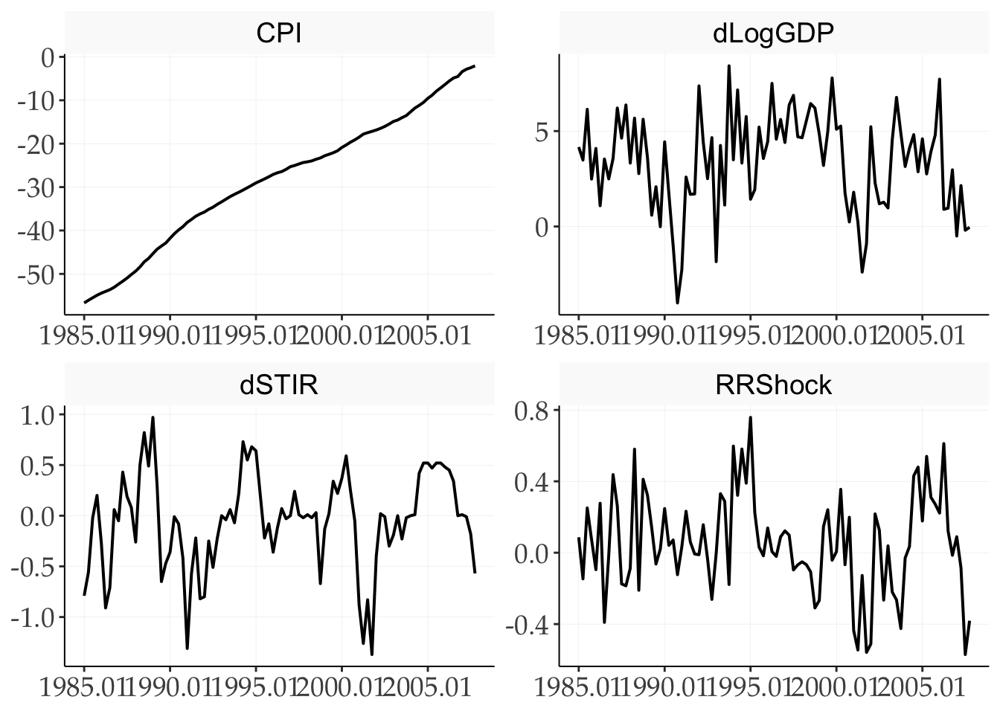
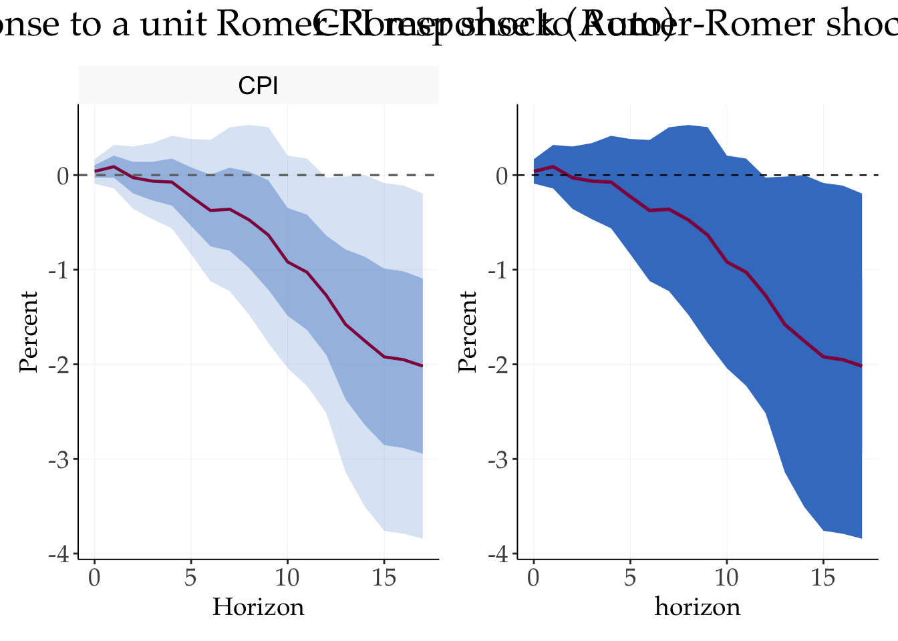
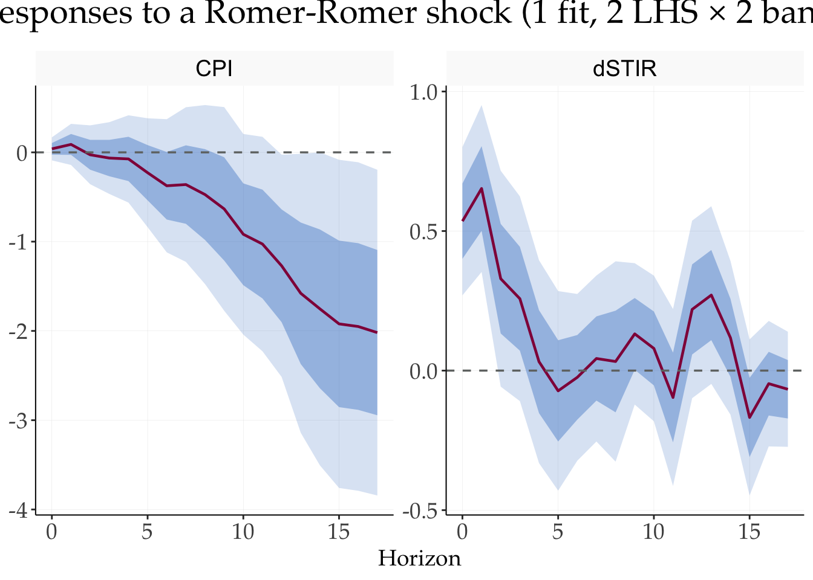
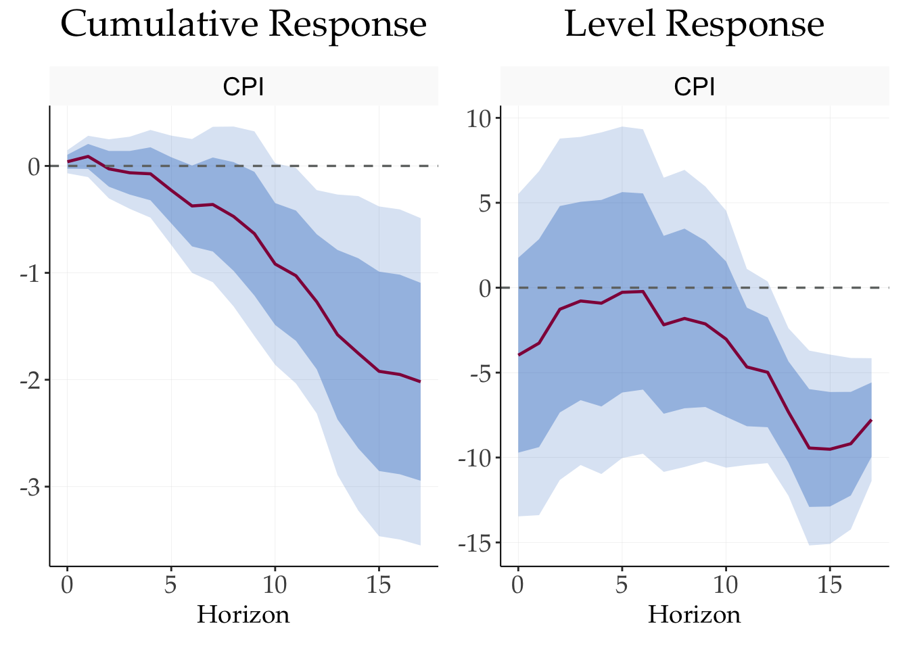
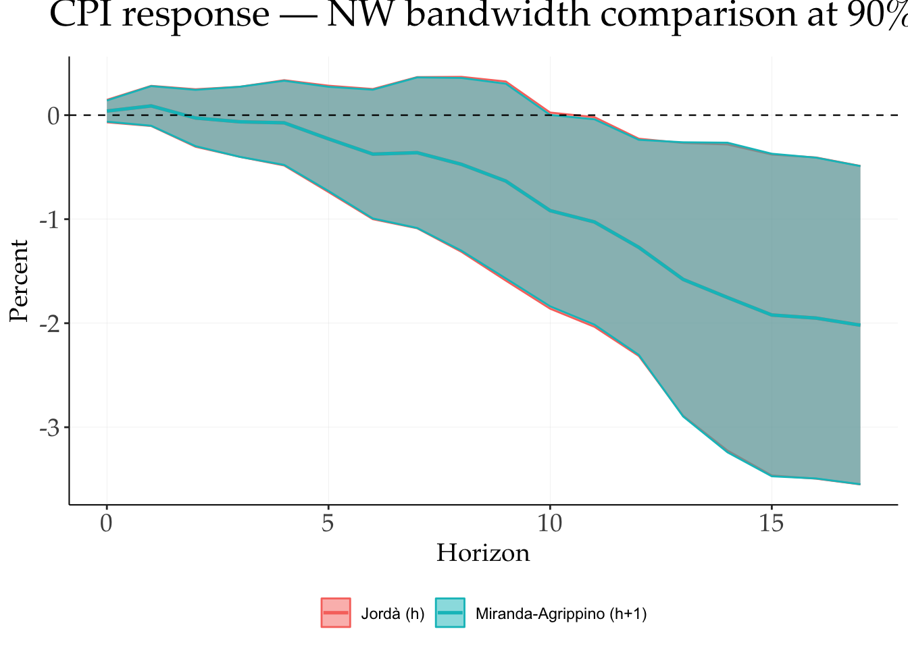
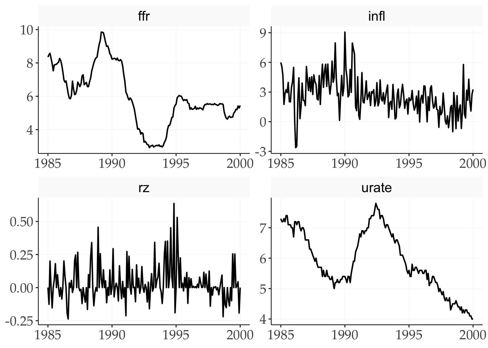
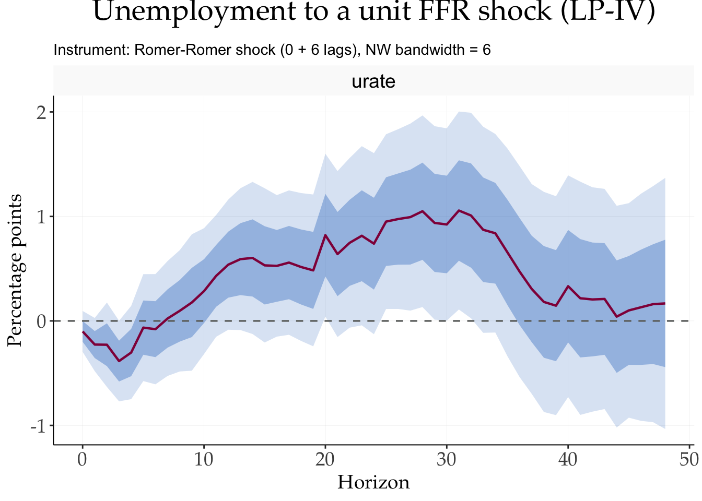
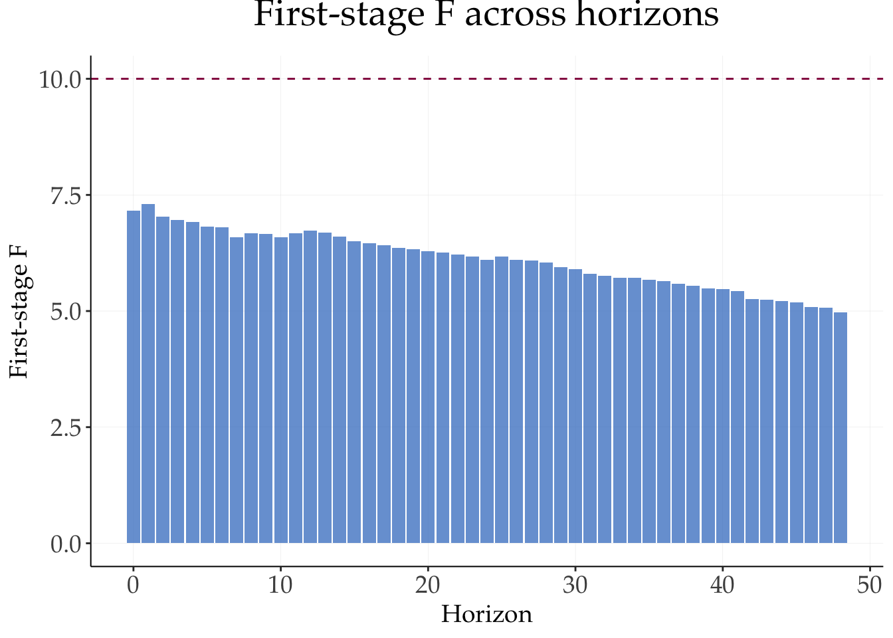

library(tidyverse)
library(tidyMacro)
library(zoo)
library(patchwork)
set_theme(fThemeTidyMacro())Local Projections with Shocks and IV
A guided tour via Jordà and Taylor (2025)
1 What are local projections (LP)?
To see the main ideas and contributions of the paper, click below to expand:
TipWhat are local projections (LP)?
here…
This chapter is a replication of Jorda and Taylor (2025) with fLP() and fLPIV(). Syntax conventions common to all four local-projection engines — formulas, ..macros, l()/f(), multi-band conf, thread rules, output shapes — live in the Local Projections syntax primer; this chapter focuses on the empirical exercise.
The empirical exercise projects log CPI (×100) on a unit Romer-Romer monetary policy shock over 1985Q1-2007Q4, using long differences CPI_{t+h} - CPI_{t-1} and four lags of real GDP growth, CPI inflation, and the short-term rate change as controls. Two features specific to reproducing Jorda and Taylor (2025) in MATLAB (LPmodel.m) matter here:
- The Newey-West bandwidth rule is Jordà’s classic
= h, i.e.nw_offset = 0(the syntax primer explains the default). Under this rule the standard errors matchOLSmodel.mbit-for-bit. - The LP-IV specification uses a fixed HAC bandwidth of 6 (
nw_lags_iv = 6), matching Stata’svce(hac nw 6).
2 Setup
3 Data
data("JordaTaylor2025")
jt_lp <- JordaTaylor2025 |>
mutate(Date = as.Date(as.yearqtr(Date, format = "%YQ%q"))) |>
dplyr::filter(Date >= "1984-10-01", Date <= "2007-10-01") |>
transmute(
Date,
CPI = 100 * logCPI,
RRShock,
dLogGDP,
dLogCPI,
dSTIR
)
jt_lp |> head()
#> # A tibble: 6 × 6
#> Date CPI RRShock dLogGDP dLogCPI dSTIR
#> <date> <dbl> <dbl> <dbl> <dbl> <dbl>
#> 1 1984-10-01 -57.8 -0.742 3.76 2.68 -2.12
#> 2 1985-01-01 -56.7 0.0864 4.16 4.57 -0.790
#> 3 1985-04-01 -56.1 -0.146 3.48 2.47 -0.560
#> 4 1985-07-01 -55.5 0.251 6.14 2.31 -0.0200
#> 5 1985-10-01 -54.9 0.0732 2.48 2.31 0.200
#> 6 1986-01-01 -54.4 -0.0949 4.09 1.95 -0.270jt_lp |>
slice(-1) |>
select(Date, CPI, RRShock, dLogGDP, dSTIR) |>
pivot_longer(-Date, names_to = "variable") |>
ggplot(aes(x = Date, y = value)) +
geom_line(linewidth = 0.7) +
facet_wrap(~ variable, scales = "free", ncol = 2) +
scale_x_date(date_labels = "%Y.%m") +
labs(x = NULL, y = NULL)
4 1 · Classic LP-OLS replication — one fit, two bands
The Jordà-Taylor (2025) result. A single call to fLP() delivers both the 68% and 95% bands: pass conf = c(0.68, 0.95) and the bands are rebuilt from the raw irfs_se in the fit object — no need to estimate twice.
controls <- c("dLogGDP", "dLogCPI", "dSTIR")
lp_jt <- fLP(
CPI ~ RRShock + l(..controls, 1:4),
data = jt_lp,
horizons = 18,
shock = "RRShock",
conf = c(0.68, 0.95), # multi-band from one fit
nw_lags = 0,
nw_offset = 0, # classic Jordà rule; matches OLSmodel.m
cumulative = TRUE,
n_threads = 1
)4.1 Direct plot
fPlotLP() draws one ribbon per band automatically (widest first, so the tighter band sits visually on top).
p1 <- fPlotLP(lp_jt) +
labs(title = "CPI response to a unit Romer-Romer shock (Auto)",
y = "Percent")4.2 Customized plot from tidy data
Every plot can also be assembled by hand from the tidy plot data.
p2 <- fPlotLP(lp_jt, return_data = TRUE) |>
ggplot(aes(x = horizon, y = point)) +
geom_ribbon(aes(ymin = lower, ymax = upper, group = conf, alpha = conf, fill = NULL),
fill = "#407EC9") +
geom_line(linewidth = 0.9, colour = "#910048") +
geom_hline(yintercept = 0, linewidth = 0.4, linetype = "dashed") +
scale_alpha_manual(values = c(`0.95` = 0.18, `0.68` = 0.34)) +
scale_x_continuous(breaks = seq(0, 15, 5)) +
labs(title = "CPI response to Romer-Romer shock (Manual)", y = "Percent")
# Compare charts
p1 + p2
fPlotLP(..., return_data = TRUE)
5 2 · Many responses to one shock: Multi-equation LHS
fLP() accepts a vector-valued LHS: c(y1, y2, y3) ~ shock + .... Each LHS variable is estimated as its own local projection against the shared RHS — in parallel across horizons (OpenMP) — and returned as a single fLP object. Combined with conf = c(0.68, 0.95), one call yields a full multi-response × multi-band figure.
lp_multi <- fLP(
c(CPI, dSTIR) ~ RRShock + l(..controls, 1:4),
data = jt_lp,
horizons = 17,
shock = "RRShock",
conf = c(0.68, 0.95),
nw_lags = 0,
nw_offset = 0,
cumulative = TRUE,
n_threads = 1
)fPlotLP(lp_multi, facet_ncol = 2) +
labs(title = "Responses to a Romer-Romer shock (1 fit, 2 LHS × 2 bands)")
Behind the scenes each response has its own regression; only the RHS is shared. This is materially faster than looping in R because the horizon loop is parallelised in C++ and only the OLS cross-products are formed once per horizon. Note also that fLP() does not auto-augment the RHS — the RHS you write is exactly what enters each regression. For instance, above the dSTIR equation happens to have dSTIR_l1..l4 on the RHS only because dSTIR is a member of the ..controls macro; if you drop it from controls, its own lags disappear from the RHS.
6 3 · Level vs cumulative responses
cumulative = TRUE regresses y_{t+h} - y_{t-1} on the RHS; FALSE regresses the level y_{t+h}. Comparing them makes the “level” vs “long-difference” distinction explicit.
lp_cum <- fLP(
CPI ~ RRShock + l(..controls, 1:4),
data = jt_lp,
horizons = 17,
shock = "RRShock",
conf = c(0.68, 0.90),
nw_lags = 0,
nw_offset = 0,
cumulative = TRUE,
n_threads = 1
)
lp_lev <- fLP(
CPI ~ RRShock + l(..controls, 1:4),
data = jt_lp,
horizons = 17,
shock = "RRShock",
conf = c(0.68, 0.90),
nw_lags = 0,
nw_offset = 0,
cumulative = FALSE,
n_threads = 1
)
fPlotLP(lp_cum) + ggtitle('Cumulative Response') + fPlotLP(lp_lev) + ggtitle('Level Response')
7 4 · Newey-West bandwidth: matching MATLAB vs the MA&R default
Two bandwidth rules give identical point estimates but different SE bands: the classic Jordà = h rule (nw_offset = 0, matches LPmodel.m bit-for-bit) and the Miranda-Agrippino & Ricco = h + 1 rule (nw_offset = 1, the fLP() default). The syntax primer covers the general convention; here we visualise the resulting band gap on this replication.
lp_jorda <- fLP(CPI ~ RRShock + l(..controls, 1:4),
data = jt_lp, horizons = 17, shock = "RRShock",
conf = 0.90, nw_lags = 0, nw_offset = 0,
cumulative = TRUE, n_threads = 1)
lp_mar <- fLP(CPI ~ RRShock + l(..controls, 1:4),
data = jt_lp, horizons = 17, shock = "RRShock",
conf = 0.90, nw_lags = 0, nw_offset = 1,
cumulative = TRUE, n_threads = 1)
# IRFs are identical; only the NW bandwidth (and hence SEs) differ.
all.equal(as.numeric(lp_jorda$irfs), as.numeric(lp_mar$irfs))
#> [1] TRUEbind_rows(
fPlotLP(lp_jorda, return_data = TRUE) |> mutate(rule = "Jordà (h)"),
fPlotLP(lp_mar, return_data = TRUE) |> mutate(rule = "Miranda-Agrippino (h+1)")
) |>
ggplot(aes(x = horizon, y = point, colour = rule, fill = rule)) +
geom_ribbon(aes(ymin = lower, ymax = upper, color = rule), alpha = 0.5) +
geom_line(linewidth = 0.9) +
geom_hline(yintercept = 0, linewidth = 0.4, linetype = "dashed") +
labs(title = "CPI response — NW bandwidth comparison at 90%",
x = "Horizon", y = "Percent", colour = NULL, fill = NULL)
8 5 · LP-IV — Unemployment response to an FFR shock
fLPIV() estimates local projections with an external instrument, mirroring fLP()’s formula-based syntax. Replicates Jordà & Taylor (2025) Figure 6a: the unemployment response to a unit federal-funds-rate shock, instrumented by the Romer-Romer (RR) narrative shock.
The specification (Ex6 tab of the JT2025 workbook, monthly 1985M1-2000M1):
- LHS:
Unemployment(long difference,y_{t+h} - y_{t-1}) - Endogenous treatment:
FFRates(the fed funds rate) - Exogenous controls: six lags of
Unemployment,Inflation,FFRates - Instruments: contemporaneous RR shock plus six lags (over-identified 2SLS)
- HAC: Newey-West with a fixed bandwidth of 6 (Stata’s
vce(hac nw 6))
The result is delivered horizon-by-horizon via Frisch-Waugh-Lovell 2SLS with a delta-method HAC standard error — the same recipe as Cesa-Bianchi’s LPmodel.m in LP-IV mode.
data("JordaTaylor2025IV")
jt_iv <- JordaTaylor2025IV |>
filter(Date >= as.POSIXct("1985-01-01"),
Date <= as.POSIXct("2000-01-01")) |>
transmute(Date,
urate = Unemployment,
infl = Inflation,
ffr = FFRates,
rz = RRShock)jt_iv |>
pivot_longer(-Date, names_to = "variable") |>
ggplot(aes(x = Date, y = value)) +
geom_line(linewidth = 0.7) +
facet_wrap(~ variable, scales = "free", ncol = 2) +
labs(x = NULL, y = NULL)
iv_ctrl <- c("urate", "infl", "ffr")
lp_iv <- fLPIV(
urate ~ ffr + l(..iv_ctrl, 1:6),
instruments = ~ l(rz, 0:6),
data = jt_iv,
endog = "ffr",
horizons = 48,
conf = c(0.68, 0.95),
nw_lags_iv = 6, # fixed HAC bandwidth = Stata's vce(hac nw 6)
cumulative = TRUE,
n_threads = 1
)
lp_iv
#>
#> Local Projections — IV (fLPIV)
#> ---------------------------------------------
#> Original formula : urate ~ ffr + l(..iv_ctrl, 1:6)
#> Expanded formula : urate ~ ffr + urate_l1 + urate_l2 + urate_l3 + urate_l4 + urate_l5 + urate_l6 + infl_l1 + infl_l2 + infl_l3 + infl_l4 + infl_l5 + infl_l6 + ffr_l1 + ffr_l2 + ffr_l3 + ffr_l4 + ffr_l5 + ffr_l6
#> Instruments : ~rz_l0 + rz_l1 + rz_l2 + rz_l3 + rz_l4 + rz_l5 + rz_l6
#> Endogenous : ffr
#> Controls : urate_l1, urate_l2, urate_l3, urate_l4, urate_l5, urate_l6, infl_l1, infl_l2, infl_l3, infl_l4, infl_l5, infl_l6, ffr_l1, ffr_l2, ffr_l3, ffr_l4, ffr_l5, ffr_l6
#> LHS variables : urate
#> Horizons : 0 to 48
#> Cumulative : TRUE
#> Confidence : 95%, 68%
#> HAC bandwidth : fixed = 6 (vce(hac nw 6))
#> Observations : 174
#>
#> IRF (endog = 'ffr'):
#> urate
#> 0 -0.0847
#> 1 -0.2292
#> 2 -0.2301
#> 3 -0.3719
#> 4 -0.2534
#> 5 -0.0076
#> 6 -0.0009
#> 7 0.0580
#> 8 0.1236
#> 9 0.1988
#> 10 0.3123
#> 11 0.4770
#> 12 0.5894
#> 13 0.6299
#> 14 0.6188
#> 15 0.5020
#> 16 0.5422
#> 17 0.6192
#> 18 0.5823
#> 19 0.5257
#> 20 0.8907
#> 21 0.7173
#> 22 0.7970
#> 23 0.8631
#> 24 0.8101
#> 25 1.0185
#> 26 1.0607
#> 27 1.0317
#> 28 1.1413
#> 29 1.0284
#> 30 0.9839
#> 31 1.1362
#> 32 1.0856
#> 33 0.9360
#> 34 0.9404
#> 35 0.7109
#> 36 0.5094
#> 37 0.3590
#> 38 0.2487
#> 39 0.2108
#> 40 0.3994
#> 41 0.2541
#> 42 0.2988
#> 43 0.2361
#> 44 0.1529
#> 45 0.1890
#> 46 0.2504
#> 47 0.3183
#> 48 0.2646
#>
#> First-stage F (h = 0..H): 7.4, 7.08, 6.99, 6.93, 6.85, 6.85, 6.66, 6.77, 6.76, 6.69, 6.74, 6.81, 6.77, 6.67, 6.57, 6.52, 6.46, 6.41, 6.37, 6.33, 6.28, 6.24, 6.19, 6.11, 6.17, 6.09, 6.04, 6, 5.87, 5.82, 5.72, 5.67, 5.63, 5.63, 5.59, 5.55, 5.48, 5.42, 5.38, 5.34, 5.29, 5.1, 5.08, 5.02, 4.99, 4.91, 4.9, 4.79, 4.72The print method summarises the endogenous treatment, control set, instrument formula, and the Newey-West bandwidth rule (fixed vs horizon-varying).
8.1 Impulse response and first-stage strength
fPlotLP(lp_iv) +
labs(title = "Unemployment to a unit FFR shock (LP-IV)",
subtitle = "Instrument: Romer-Romer shock (0 + 6 lags), NW bandwidth = 6",
y = "Percentage points")
tibble::tibble(horizon = 0:48, F = as.numeric(lp_iv$Fstat_fs)) |>
ggplot(aes(x = horizon, y = F)) +
geom_col(fill = "#407EC9", alpha = 0.75) +
geom_hline(yintercept = 10, colour = "#910048", linetype = "dashed") +
labs(x = "Horizon", y = "First-stage F",
title = "First-stage F across horizons")
The Fstat_fs and rsqr_fs fields expose the per-horizon first-stage diagnostics for the (residualised) IV projection — worth checking whenever the point estimates look surprising. The df convention (Th - kc - nz) is documented in the syntax primer.
9 6 · Tidy output for downstream work
tidy.fLP() returns a long data frame. For single-band fits, the shape matches the historical broom-style output (estimate, se, lower, upper). For multi-band fits, one lower_X / upper_X column pair is produced per confidence level. It works on both fLP() and fLPIV() results.
tidy.fLP(lp_jt) |> head(6)
#> horizon lhs shock estimate se lower_0.95 upper_0.95 lower_0.68
#> 1 0 CPI RRShock 0.03926033 0.06578167 -0.08966937 0.1681900 -0.02615677
#> 2 1 CPI RRShock 0.08884440 0.11743912 -0.14133205 0.3190209 -0.02794386
#> 3 2 CPI RRShock -0.02728809 0.16816012 -0.35687588 0.3022997 -0.19451625
#> 4 3 CPI RRShock -0.06389951 0.20501135 -0.46571437 0.3379153 -0.26777466
#> 5 4 CPI RRShock -0.07363836 0.24941001 -0.56247300 0.4151963 -0.32166611
#> 6 5 CPI RRShock -0.22802839 0.31100676 -0.83759044 0.3815337 -0.53731152
#> upper_0.68
#> 1 0.10467743
#> 2 0.20563266
#> 3 0.13994007
#> 4 0.13997564
#> 5 0.17438939
#> 6 0.08125473tidy.fLP(lp_jorda) |> head()
#> horizon lhs shock estimate se lower upper
#> 1 0 CPI RRShock 0.03926033 0.06578167 -0.06894088 0.1474616
#> 2 1 CPI RRShock 0.08884440 0.11743912 -0.10432577 0.2820146
#> 3 2 CPI RRShock -0.02728809 0.16816012 -0.30388688 0.2493107
#> 4 3 CPI RRShock -0.06389951 0.20501135 -0.40111317 0.2733141
#> 5 4 CPI RRShock -0.07363836 0.24941001 -0.48388132 0.3366046
#> 6 5 CPI RRShock -0.22802839 0.31100676 -0.73958899 0.2835322tidy.fLP(lp_iv) |> head(6)
#> horizon lhs shock estimate se lower_0.95 upper_0.95 lower_0.68
#> 1 0 urate ffr -0.084687889 0.1008886 -0.2824259 0.11305010 -0.1850173
#> 2 1 urate ffr -0.229171350 0.1389692 -0.5015460 0.04320333 -0.3673704
#> 3 2 urate ffr -0.230136875 0.2162507 -0.6539804 0.19370666 -0.4451891
#> 4 3 urate ffr -0.371867562 0.2088968 -0.7812977 0.03756257 -0.5796066
#> 5 4 urate ffr -0.253362503 0.2356595 -0.7152467 0.20852168 -0.4877160
#> 6 5 urate ffr -0.007562491 0.2685829 -0.5339752 0.51885025 -0.2746568
#> upper_0.68
#> 1 0.01564156
#> 2 -0.09097231
#> 3 -0.01508469
#> 4 -0.16412853
#> 5 -0.01900903
#> 6 0.2595318610 Summary
nw_offset = 0(classic Jordà= hrule) andnw_lags_iv = 6reproduce the Jorda and Taylor (2025) MATLAB / Stata standard errors.- Both
fLP()andfLPIV()handle multi-bandconfand, forfLP(), multi-equation LHS in a single fit — see the syntax primer for the shared conventions.
References
Jorda, Oscar, and Alan M. Taylor. 2025. “Local Projections.” Journal of Economic Literature 63 (1): 59–110. https://doi.org/10.1257/jel.20241521.